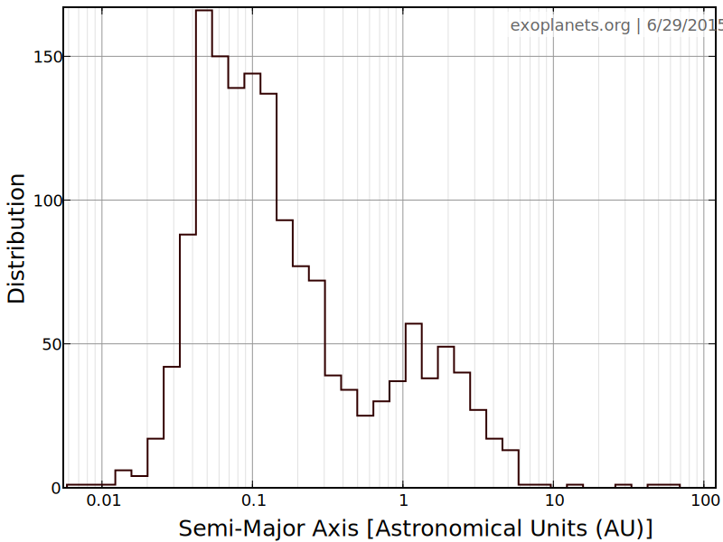
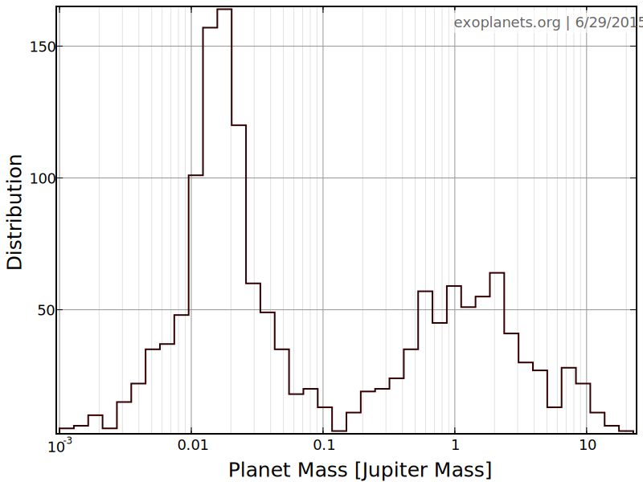

Keplerian Orbits
Introduction
The Solar System consists of eight planets, together with many smaller bodies,
that orbit the Sun. In addition to our own Solar System, astronomers
have discovered thousands of other extra-solar planets. A catalogue of these
systems can be found here. These new systems are very different from
our familiar Solar System. Most of them are very compact, and most of them orbit inside
the Earth's orbit, while many have orbits closer to their host star. In addition, most
of these discovered exoplanets are Super Earths, or planets that have a mass that of Earth and Neptune. The figures below show the distribution of planet semi major axes and masses for all of the discovered explanets.


The Orbit Simulator
In this activity we will use the Orbit Simulator to discover the relationship
between how long it takes a planet to go around the Sun and how far away that
planet is from the Sun. This is also called Kepler's Third Law.
- Adjust the Planet's semi-major axis using the Semi Major Axis slider.
Note the units of the semi-major axis. What happens when you increase the
distance between the planet and the Sun?
- Using the graph of position versus time in the Orbit Simulator, measure
the period and velocity of your planet for several different semi major axis values. If you
want to use real planets, you can use the Planet Table at the bottom of the page
which summarizes the properties of the Solar System planets as well as some exoplanets.
Make sure to evenly space out your semi major axis choices on the slider.
-
Using your favorite plotting program (I recommend plot.ly),
make a plot of Period vs Semi Major Axis and a plot of Velocity vs Semi Major Axis with the data you've collected.
What does this tell you about the relationship between period and semi-major
axis? Is it a linear relationship? Why or why not? Remember that two variables, x and y,
have a linear relationship if you can write relate them with the equation of a line, y=m*x+b.
-
Next make a plot of the square of the period vs the cube of the semi-major
axis, P2 vs a3 . Does this graph describe a linear relationship?
-
Finally, make a plot of the logarithm of period versus the logarithm of semi-
major axis, Log(P) vs. Log(a) . What is the slope of this line and how does this connect to the
previous question?
-
What is Kepler's Third Law from your data?
-
What is the relationship between Planet Velocity and Semi Major Axis?
Eccentricity Effects
For this activity we will explore the shape of the planet's orbit, and how the
planet's eccentricity affects it.
-
Adjust the eccentricity of the planet using the eccentricity slider. How does
this change the orbit? What shape is this?
-
How does the planet's speed change during the course of an orbit? Does this differ from
what you found in the first activity for a circular orbit?
-
Using the velocity versus position graph, what is the ratio of the speed of
the planet at closest approach (periapse), to farther approach (apoapse) ? What is this
ratio for a circular orbit?
Mass Effects
In this final activity we will be looking at the effects of varying the planet's
mass.
-
What happens as you increase the planet's mass? Does anything interesting happen
to the Sun?
-
Using the radial velocity graph, measure the largest speed of the Sun over
the course of one orbit for different planet masses . How fast does the Sun move
because of Jupiter? How fast is this compared to average walking speed?
Planet Table
Below is a table of the Solar System planets, as well as some exoplanets. Try to set up the orbit of each of the planets in the table and measure their orbital period. You can try out different exoplanets by looking them up here.
| Planet |
Semi Major Axis (Au) |
Eccentricity |
Mass (M⊕) |
| Mercury |
0.39 |
0.21 |
0.055 |
| Venus |
0.72 |
0.0.007 |
0.82 |
| Earth |
1.0 |
0.017 |
1.0 |
| Mars |
1.52 |
0.093 |
0.055 |
| Jupiter |
5.20 |
0.048 |
317.8 |
| Saturn |
9.53 |
0.054 |
95.3 |
| Uranus |
19.19 |
0.046 |
14.6 |
| Neptune |
30.06 |
0.01 |
17.23 |
| HD 1237 b |
0.5 |
0.51 |
>1071 |
| Wasp-14 b |
0.037 |
0.091 |
2444 |
| HD 147018 b |
0.24 |
0.47 |
>674 |
| GJ 649 b |
1.13 |
0.30 |
>103 |